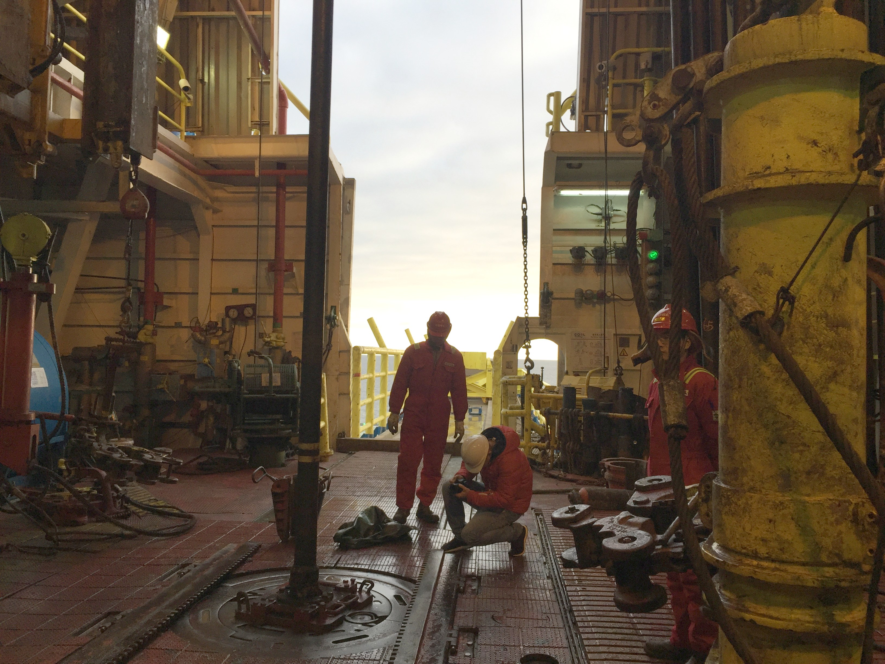

Home / Cases
Cases
AI only where it is justified
Every case follows the same structure: task → verdicts by process → result.

+13% Northern Sea Route voyages and +14.5% speed in ice
A navigational-safety platform for oil and gas groups and the national shipping operator: ice conditions, routing, autonomy bounds.
Read the case → International
International>RUB 2 bn saved for shipowners and operators · 2025–2029
Meteo bulletins and insurance-cover control for insurers; fleet-anomaly detection for fishing shipowners. In-house development and deployment of the service in seven countries.
Read the case →
−38% vessel-days for sea area monitoring
From continuous visual patrolling to targeted drone monitoring: natural and anthropogenic oil spills.
Read the case →
+18% branch workload with reduced headcount
An agent that allocates and prioritises branch work in a closed government environment, with a governance standard on top.
Read the case →
LLM in 3 of 8 subtasks – and that is the right call
An initiatives portfolio for a Moscow top-3 developer: where AI is justified and where plain rules suffice.
Read the case →
37 systems, 60+ agencies, ~RUB 1 bn programme
Moscow unified geo-information space: from fragmented agency data to a manageable system.
Read the case →
From drone image to inspector case in 2 hours
ML detection of weed and quarantine plants for state oversight: from image to a ready case for the inspector.
Read the case →
+RUB 17.8 mln per semi-sub season · payback from ~13 h
An assessment of drilling rig processes: where AI is justified and where only deterministic automation belongs.
Read the case →
AI microscope: patient acceptance grows 30%
An AI adoption program for a dental microscope: three feature waves toward an endodontic AI assistant.
Read the case →Start with a conversation
45 minutes on your context and questions. You leave knowing how much diagnostics you actually need.